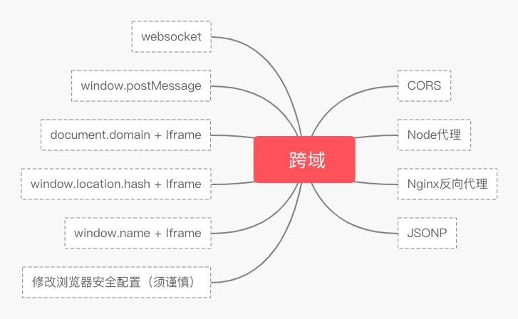

常用的跨域方式
跨域iframe传值
postMessage()方法允许来自不同源的脚本采用异步方式进行有限的通信， 可以实现跨文本档、多窗口、跨域消息传递. postMessage(data,origin)方法接受两个参数：
- data:要传递的数据，html5规范中提到该参数可以是JavaScript的任意基本类型或可复制的对象， 然而并不是所有浏览器都做到了这点儿，部分浏览器只能处理字符串参数， 所以我们在传递参数的时候需要使用JSON.stringify()方法对对象参数序列化， 在低版本IE中引用json2.js可以实现类似效果，
- origin：字符串参数，指明目标窗口的源， 协议+主机+端口号[+URL]，URL会被忽略， 所以可以不写，这个参数是为了安全考虑， postMessage()方法只会将message传递给指定窗口， 当然如果愿意也可以建参数设置为"*"， 这样可以传递给任意窗口，如果要指定和当前窗口同源的话设置为"/"；
<iframe src="http://192.168.1.5:8020/2018-07~11project/跨域iframe传值/b.html"
name="postIframe" onload="messageLoad()"></iframe>
<script>
function messageLoad() {
var url = "http://192.168.1.5:8020";
window.postIframe.postMessage("给我post传递的信息", url); //发送数据
}
window.onmessage = function(e) {
e = e || event;
console.log(e.data); //接收b返回的数据，在控制台有两次输出
}
</script>
iframe页面
<script>
/*window.addEventListener('message',function(e){})方法也可以*/
window.onmessage = function(e) {
e = e || event;
alert(e.data); //立即弹出a发送过来的数据
e.source.postMessage("好的，请稍等三秒！", e.origin); //立即回复a
var postData = {
name: "tsrot",
age: 24
};
var strData = JSON.stringify(postData); //json对象转化为字符串
setTimeout(function() {
e.source.postMessage(strData, e.origin);
}, 3000); //3秒后向a发送数据
}
</script>
注意：跨域地址一定要一致，不能输入错误，一定是浏览器前面的域名地址。
CORS
跨域资源共享(CORS) 是一种机制，它使用额外的 HTTP 头来告诉浏览器 让运行在一个 origin (domain) 上的 Web 应用被准许访问来自不同源服务器上的指定的资源。 当一个资源从与该资源本身所在的服务器「不同的域、协议或端口」请求一个资源时， 资源会发起一个「跨域 HTTP 请求」。
//koa 框架 app.use(async (ctx, next) => { ctx.set("Access-Control-Allow-Origin", ctx.headers.origin); ctx.set("Access-Control-Allow-Credentials", true); ctx.set("Access-Control-Request-Method", "PUT,POST,GET,DELETE,OPTIONS"); ctx.set("Access-Control-Allow-Headers","Origin, X-Requested-With, Content-Type, Accept, cc" ); if (ctx.method === "OPTIONS") { ctx.status = 204; return; } await next(); }); const cors = require("koa-cors"); app.use(cors());
Node 正向代理
//Webpack (4.x)
const path = require("path");
const HtmlWebpackPlugin = require("html-webpack-plugin");
module.exports = {
...
devServer: {
port: 8000,
proxy: {
"/api": {
target: "http://localhost:8080"
}
}
},
...
};
Nginx 反向代理
//配置 nginx
server {
listen 80;
server_name local.test;
location /api {
proxy_pass http://localhost:8080;
}
location / {
proxy_pass http://localhost:8000;
}
}
重启 nginx
systymctl nginx -s reload (linux操作方法)
JSONP
<script type="text/javascript">
window.jsonpCallback = function(res) {
console.log(res);
};
</script>
<script
src="http://localhost:8080/api/jsonp?msg=hello&cb=jsonpCallback"
type="text/javascript"></script>
jquery ajax：
$.ajax({
url: 'http://www.domain2.com:8080/login',
type: 'get',
dataType: 'jsonp', // 请求方式为jsonp
jsonpCallback: "handleCallback", // 自定义回调函数名
data: {}
});
vue.js：
this.$http.jsonp('http://www.domain2.com:8080/login', {
params: {},
jsonp: 'handleCallback'
}).then((res) => {
console.log(res);
})
Websocket
//前端
let socket = new WebSocket("ws://localhost:8080");
socket.onopen = function() {
socket.send("秋风的笔记");
};
socket.onmessage = function(e) {
console.log(e.data);
}
//后端
const WebSocket = require("ws");
const server = new WebSocket.Server({ port: 8080 });
server.on("connection", function(socket) {
socket.on("message", function(data) {
socket.send(data);
});
});